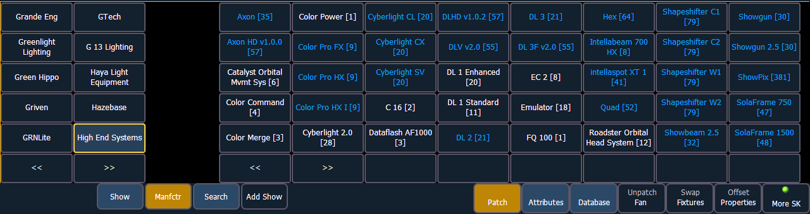
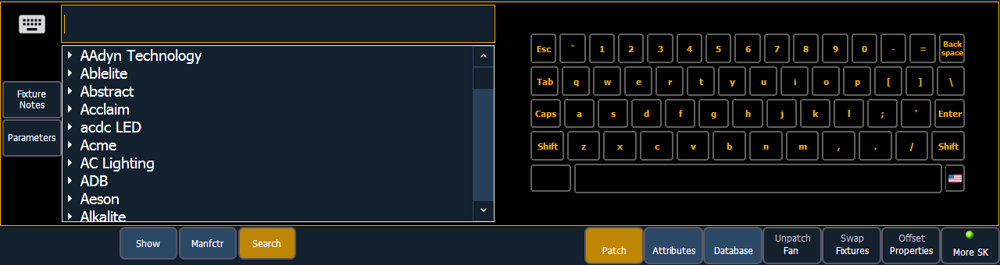

The process of patching moving lights requires more detail than patching a dimmer. Specific information is required for more advanced control of the features offered by moving lights.
Note: It is recommended that when patching moving lights, LEDs, and accessories that you work in patch by channel mode. See Patching By Channel .
After you have entered the channel number, click {Type}. You will then select a device type from the fixture library.

Notice the four softkeys {Show}, {Manfctr}, {Search}, and {Add Show} located beneath the CIA.
{Show} provides you with the option of showing only the library of fixtures or devices that are already patched in the show, your favorites, and default devices. {Manfctr} shows all fixtures or devices available in the library sorted by manufacturer.
Press {Manfctr} from the CIA to display the fixture library. The two columns on the left are pageable and show manufacturer names. Use the arrow buttons to scroll the list of manufacturers. Selecting a manufacturer repaints the device columns with all devices from that manufacturer that are available for patching.
Scroll through the device list and make your selection. If a fixture has multiple modes or types, it will display in blue text. Clicking on its name will open a list of available modes. After the selection is made, the fixture or device type will be placed on the command line after the channel number and displayed in the box beneath the {Type} button.
Press {Search} to open the search window. You will need an external alphanumeric keyboard or you can click the keyboard icon in the search window to open the virtual keyboard. You can also navigate the list as you would the browser. You can search by manufacturer name, fixture name, part of a name, and by DMX footprint. For example, if you searched for 31, you would see all of the fixtures that have a DMX footprint of 31. Double clicking on a fixture name will patch it.

In the search window, press {Parameters} to view a parameter list for a fixture, or press {Fixture Notes} to see any notes that exist for it. You can also view this information in the Fixture Editor.
Press [At] and then enter a starting address for the selected channel or group of channels. The desk will automatically offset addresses based on the fixture type selected.
{Add Show} will add a fixture or device to your show list. If you want to delete a fixture or device from the show list, click {Edit} while in the show display. Select the device you wish to remove and click {Delete}.
Note: Fixtures can be added to your show list without first patching them. With nothing on the command line, click {Type}. You can then select a device type from the fixture library, and click {Add Show} to add to your show list.
To select a device interface (optional), click {Interface}. See Output Protocols .
Click the {Attributes} softkey to set detailed moving light attributes. The following buttons may be available on this page depending on the device selected: {Preheat}, {Proportion}, {Curve}, {Fan Curve}, {LD Flags}, {GM Exempt}, {Invert Pan}, {Invert Tilt}, {Swap P/T}, {Color Path}, {Scrollers}, {Gobo Wheels}, {Color Wheels}, and {Effect Wheels}. Additional buttons maybe available based off of your fixture type. See {Attribute} Display and Settings .
If your moving light includes parameters such as a color scroller or gobo wheel and you have custom gels or non-standard patterns installed, use the Scroller/ Wheel Picker and Editor to modify the device patched. The more specific your patch data (including accurate colors and patterns), the more detailed programming and operating will be. See Using the Scroller/Wheel Picker and Editor .